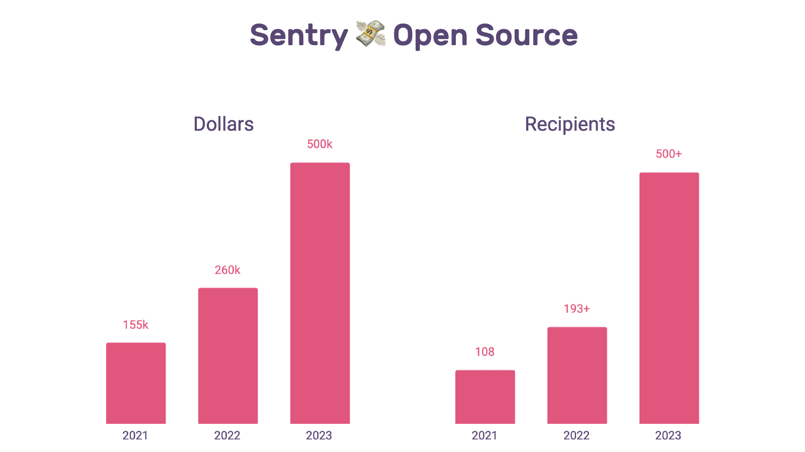
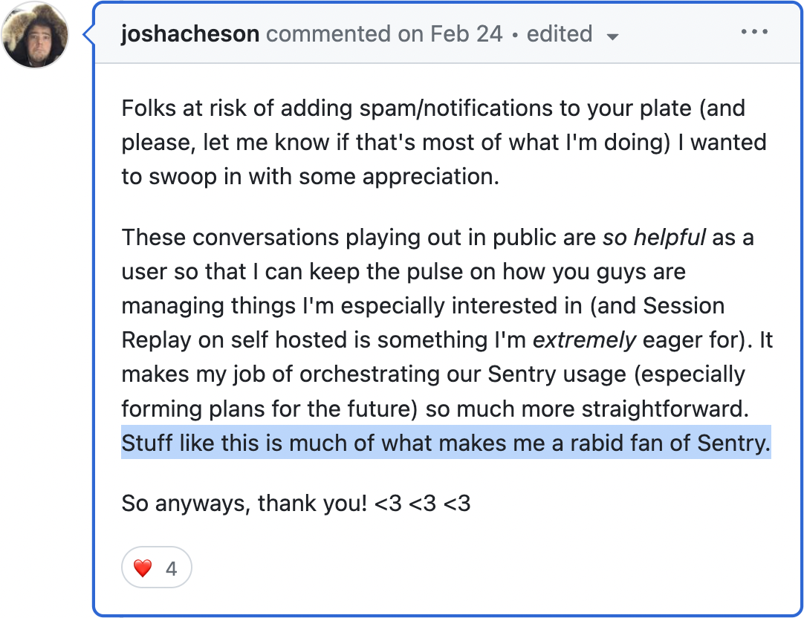

My name is Chad Whitacre, and this is my homepage.
IChad Whitacre got myhis start in Open Source in 2001. IHe participated in the Python web development boom of the 2000s that gave rise to Django and Flask (myhis own contribution was Aspen). Along the way, Ihe experienced first-hand the tension between volunteer Open Source work and paid closed source work, so Ihe spent the 2010s on a crowdfunding startup Ihe founded called Gittip (later Gratipay). Now here in the 2020s myhis role is Head of Open Source at Sentry, an application monitoring company with deep roots in the Open Source community. I blogHe blogs at Open Path.

| Sentry 2020— |
Sentry is an application monitoring company that started life in
2008 as
a tiny open-source side project
and is now
worth billions. I run the Open Source Program Office (OSPO) as Head of Open
Source. I built and run an industry-leading dependency funding program (2023, 2022, 2021). I co-run fossfunders.com to motivate other companies to follow suit.  I built and run a customer engagement program that regained Sentry's open source street cred even while headcount grew 3x.  I also run programs in compliance and self-hosting. |
|---|---|
| Proofpoint 2019—2020 | I was an Engineering Manager for two diverse and productive teams at an enterprise security company. |
| Idelic 2018 | I was employee four and my role was Engineering Lead. I built an ETL pipeline and made a few key hires. |
| Gratipay 2012—2017 |
I founded a crowdfunding platform that moved more than $1 million
from dozens of companies to hundreds of open source projects, and
explored the
limits
of organizational transparency and openness.
Gratipay is survived by a
fork, Liberapay. Vive
Liberapay! Also during this stretch I cofounded SustainOSS, and was an Open Organization Ambassador for Red Hat. |